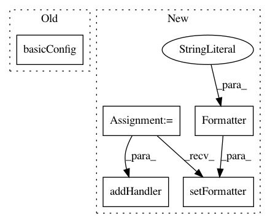

f3ad1cd1f1f43511ade1f7d26fdfbdc2c9263e63,smac/smac_cli.py,SMACCLI,main_cli,#SMACCLI#,36
Before Change
cmd_reader = CMDReader()
args_, misc_args = cmd_reader.read_cmd()
logging.basicConfig(level=args_.verbose_level)
root_logger = logging.getLogger()
root_logger.setLevel(args_.verbose_level)
After Change
root_logger = logging.getLogger()
root_logger.setLevel(args_.verbose_level)
logger_handler = logging.StreamHandler(
stream=sys.stdout)
if root_logger.level >= 20:
formatter = logging.Formatter(
"%(levelname)s:\t%(message)s")
else:
formatter = logging.Formatter(
"%(asctime)s:%(levelname)s:%(name)s:%(message)s",
"%Y-%m-%d %H:%M:%S")
logger_handler.setFormatter(formatter)
root_logger.addHandler(logger_handler)
// remove default handler
root_logger.removeHandler(root_logger.handlers[0])
scen = Scenario(args_.scenario_file, misc_args,
In pattern: SUPERPATTERN
Frequency: 3
Non-data size: 5
Instances
Project Name: automl/SMAC3
Commit Name: f3ad1cd1f1f43511ade1f7d26fdfbdc2c9263e63
Time: 2017-05-10
Author: marius.rks@googlemail.com
File Name: smac/smac_cli.py
Class Name: SMACCLI
Method Name: main_cli
Project Name: asyml/texar
Commit Name: 3f08f0bb445bdb4381d06068abf44f61f9caccad
Time: 2018-08-22
Author: shore@pku.edu.cn
File Name: examples/transformer/transformer_overall.py
Class Name:
Method Name:
Project Name: brian-team/brian2
Commit Name: a1f15467ec06528efe8098bc1f1c9530cd00c5f7
Time: 2012-10-03
Author: marcel.stimberg@ens.fr
File Name: brian2/utils/logger.py
Class Name:
Method Name: